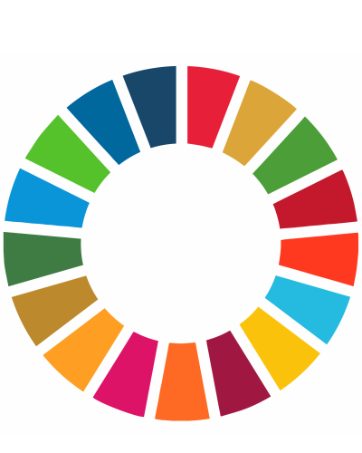
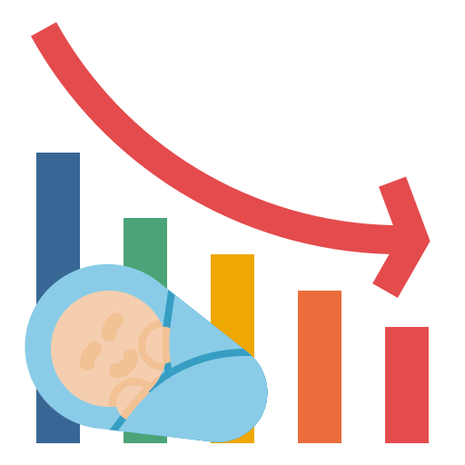

Meta 5 ODS Igualdade Gênero
Mulheres e Trabalho
 Objetivos de Desenvolvimento Sustentável (ODS), também conhecidos como Objetivos Globais, foram adotados pelas Nações Unidas em 2015 como um apelo universal à ação para acabar com a pobreza, proteger o planeta e garantir que até 2030 todas as pessoas desfrutem de paz e prosperidade.
Saiba mais
Mulheres no Mercado de Trabalho | Entrevista - Futuro do Trabalho
Flávia Oliveira conversa com a economista Ana Fava sobre um histórico recente da inserção das mulheres no mundo profissional e o contexto atual.
Meta 5 Igualdade de Gênero
Acabar com toda a discriminação contra mulheres e meninas não é apenas um direito humano básico, é crucial para um futuro sustentável; está comprovado que o empoderamento de mulheres e meninas ajuda no crescimento e desenvolvimento econômico.
O PNUD colocou a igualdade de gênero no centro de seu trabalho e vimos um progresso notável nos últimos 20 anos.
Há mais meninas na escola agora em comparação com 15 anos atrás, e a maioria das regiões alcançou a paridade de gênero na educação primária.
Porém, embora haja mais mulheres do que nunca no mercado de trabalho, ainda existem grandes desigualdades em algumas regiões, sendo sistematicamente negado às mulheres os mesmos direitos trabalhistas que os homens.
A violência e a exploração sexual, a divisão desigual do cuidado não remunerado e do trabalho doméstico e a discriminação no cargo público continuam sendo enormes barreiras.
As mudanças climáticas e os desastres continuam a ter um efeito desproporcional sobre mulheres e crianças, assim como os conflitos e a migração.
É vital dar às mulheres direitos iguais a terra e propriedade, saúde sexual e reprodutiva, tecnologia e internet. Hoje há mais mulheres em cargos públicos do que nunca, mas encorajar mais mulheres líderes ajudará a alcançar uma maior igualdade de gênero.
Saiba mais
Meninas na Computação o protagonismo é delas! | TechSchool premia talentos e apps de 2023
Meninas de oito a 18 anos criam apps que ajudam a solucionar problemas da comunidade; projeto de extensão da USP já teve cinco edições
Elas Na Tech
O programa Elas Na Tech é uma iniciativa que busca aumentar a participação feminina no setor de tecnologia, que historicamente tem sido dominado por homens. Em parceria com a Junior Achievement Brasil e o Grupo CCR, o programa oferece um curso gratuito e online de programação em TI, com o objetivo de formar mulheres para cargos de programação.
O curso tem duração de 20 semanas e oferece cinco horas de aula por semana. Além do conteúdo técnico, o programa Elas Na Tech também ajuda a desenvolver habilidades empreendedoras para que as alunas possam se posicionar no mercado tecnológico.
O Elas Na Tech já está em sua segunda edição (2023) e oferece 2.200 vagas para mulheres de todo o país. As inscrições ficaram abertas até 30 de abril e as aulas, geralmente, estão distribuídas entre maio e outubro deste ano.
Além do conteúdo técnico, as alunas do Elas Na Tech também têm acesso a aulas semanais ao vivo com as professoras para acompanhamento do cronograma de conteúdo e acesso constante assíncrono às monitoras, alunas formandas do projeto de 2022, preparadas para tirar dúvidas e acompanhar as turmas.
Também, há transmissões ao vivo quinzenais pelo YouTube com profissionais do mercado sobre temas que irão auxiliar as habilidades profissionais das desenvolvedoras web.
Ao concluir o curso, as alunas recebem dois certificados: um de conclusão dos cursos online na plataforma da IBM e outro de conclusão da jornada do Elas Na Tech. O programa é uma oportunidade única para formação completa em programação web feita exclusivamente para mulheres, e é uma forma importante de promover a igualdade de gênero e diversidade no setor de tecnologia.Divulgação no site Guia de TI
Cai taxa de natalidade no Brasil
Será também, reflexo da mulher no mercado de trabalho?

Fonte:https://www.flaticon.com/br/icone-gratis/taxa-de-natalidade_3382535?term=taxa+natalidade&related_id=3382535
Os dados do IBGE mostram que, ao longo dos anos, o Brasil tem registrado queda de fecundidade, que é a proporção de partos por mulheres em idade fértil (15 a 49 anos).
- 2001 - 56,4 registros a cada 1.000 mulheres;
- 2021 - 45,6 registros a cada 1.000 mulheres;
Ao longo do tempo, o país também vem tendo um aumento na idade média das mães.
Em 2001, por exemplo, 21,6% dos partos eram de mães com menos de 20 anos. Em 2021, esse percentual caiu para 13,2%.
Notícias UOL
Economia do cuidado

Fonte:https://www.pexels.com/pt-br/foto/adoravel-encantador-cativante-bebe-7282818/
Cresce, no mundo todo, o número de pessoas que demandam serviços de cuidado. De acordo com o último relatório da Organização Internacional do Trabalho (OIT), esse universo deverá ser de 2,3 bilhões de pessoas em 2030 – há cinco anos, eram 2,1 bilhões.
O envelhecimento da população e as novas configurações familiares, com mulheres mais presentes no mercado de trabalho e menos disponíveis para assumir encargos com parentes sem autonomia, têm levado os países a repensar seus sistemas de atenção a populações vulneráveis.
Leia o artigo completo FAPESP
A participação das mulheres negras no mercado de trabalho

Fonte:https://www.pexels.com/pt-br/foto/foto-de-mulheres-no-encontro-3810792/
A situação das mulheres negras no mercado de trabalho permanece preocupante.
Elas tendem a ter menor participação e as taxas de desemprego e informalidade são mais altas entre mulheres negras do que nos demais grupos demográficos.
Elas tendem a participar menos do mercado de trabalho, com uma taxa inferior à das mulheres brancas, que já considerada baixa. Além disso, a taxa de desemprego e de informalidade também são mais altas entre as mulheres negras do que para os demais grupos.
Leia o artigo completo FGV